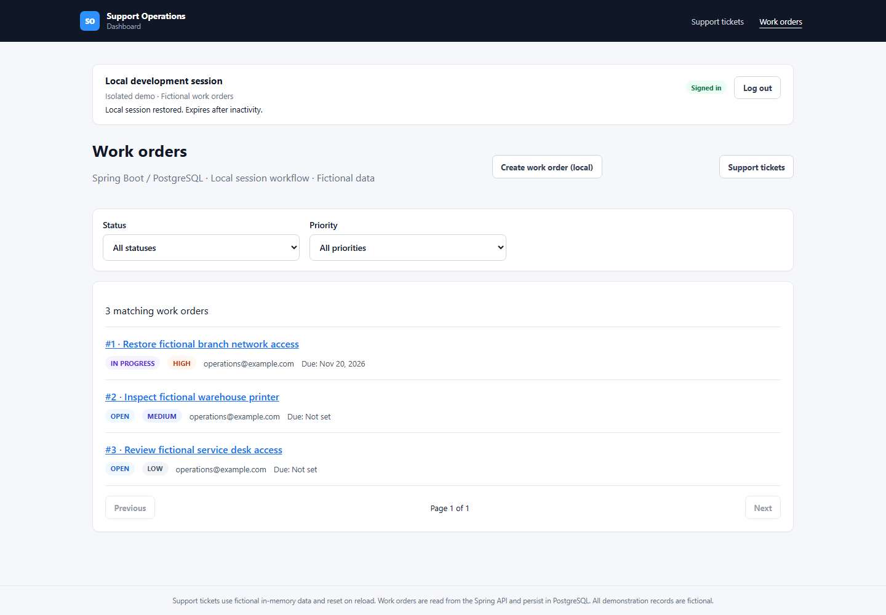
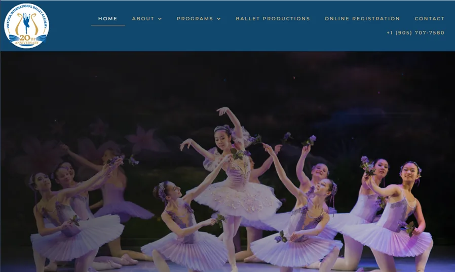
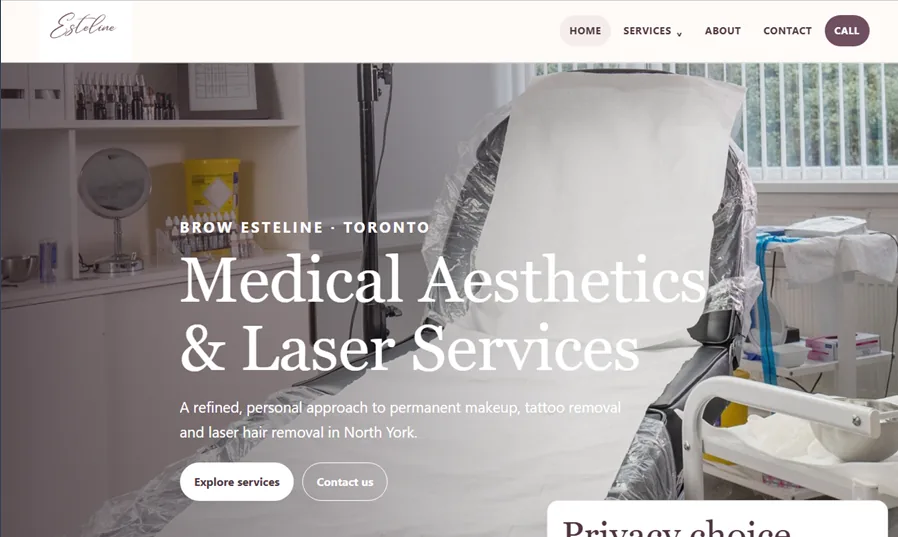

Enterprise Web Applications
Build and maintain production web platforms for operational inspection, compliance, and internal business workflows.
Enterprise Applications · Java/Spring Boot · Angular · AWS
Senior Software Engineer
I build and maintain production web platforms, backend services, APIs, and reporting workflows for enterprise and government-facing systems.
About
George is a software engineer with 7+ years of experience delivering production enterprise applications, cloud-hosted backend services, APIs, and automated reporting systems. His recent work spans Angular and AngularJS applications, Java/Spring Boot services, AWS-hosted components, REST API integrations, MySQL-backed workflows, and reporting automation with JasperReports and Jaspersoft Studio.
He is strongest where software needs to be reliable, maintainable, understandable, and delivered under practical constraints. His work includes troubleshooting production issues, supporting releases, improving validation and error handling, modernizing long-lived applications, and collaborating with QA, developers, stakeholders, and support teams.
What I Do
Build and maintain production web platforms for operational inspection, compliance, and internal business workflows.
Develop backend services, REST APIs, integrations, validation logic, and service improvements for production environments.
Extend existing AngularJS systems, implement Angular components, and improve maintainability in long-lived platforms.
Support cloud-hosted application components, backend services, and deployment-ready application workflows.
Implement PDF and operational reporting workflows using JasperReports and Jaspersoft Studio.
Troubleshoot bugs, support releases, improve reliability, and keep business-critical systems stable.
Portfolio Projects
Featured Independent Full-Stack Engineering Project
Built an integrated work-order application connecting Angular 22/TypeScript to a Java 21/Spring Boot API and PostgreSQL. Typed HTTP services, reactive forms, server-side validation, filtering and pagination support persisted work-order creation and status updates.
An isolated local mode demonstrates session authentication and CSRF-protected writes, verified with Docker Compose, PostgreSQL Testcontainers, Playwright and GitHub Actions.

Automated Testing & Verification
45 backend tests · 75 Angular tests · 2 Chromium browser E2E tests passed
The authenticated full-stack work-order workflow was verified locally and is not publicly deployed. The public frontend and API are separate, earlier demonstrations.
Engineering portfolio project
Side-by-side legacy AngularJS and modern Angular implementation demonstrating practical maintenance and incremental migration of an existing frontend application.
Independent Consulting
Alongside enterprise application development, I help businesses recover, modernize, and maintain their websites.

WordPress recovery & troubleshooting
An Elementor update left the academy's existing WordPress website with incompatible Core/Pro versions and PHP fatal errors.

Legacy website modernization
The business's AngularJS website needed a simpler foundation, improved mobile layouts, and clearer search metadata.
Experience
Tech Stack
Angular, AngularJS, React, Ionic, TypeScript, JavaScript, HTML5, CSS3
Java, Spring Boot, Tomcat, Node.js, Python, Flask, REST APIs
AWS, DigitalOcean, Linux, Nginx, GitHub Actions, CI/CD, Postman
PostgreSQL, MySQL, MongoDB
JasperReports, Jaspersoft Studio
Git, VS Code, Bootstrap, WordPress
Selected Work / Focus Areas
Production applications supporting operational workflows, field activity, validation, and release support.
Java/Spring Boot services, REST integrations, database-backed workflows, and API validation.
Automated reporting workflows and maintainable report templates for operational reporting needs.
Incremental Angular and AngularJS improvements that reduce technical debt while preserving production stability.
Web applications, website refreshes, CMS improvements, troubleshooting, deployment, and ongoing support.
Contact